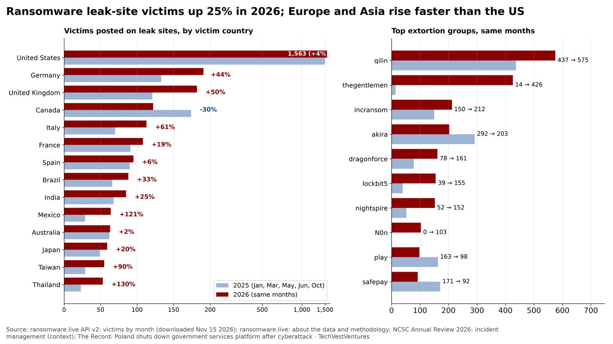

Q6. Leak Sites

Organisations named on ransomware gangs' leak sites, as tracked by ransomware.live, comparing the same 5 months of 2026 and 2025 (Jan, Mar, May, Jun, Oct; other months could not be downloaded completely). Victims rose from 3,297 to 4,124 (+25%). The United States still accounts for the most named victims (1,563) but grew only +4%; Germany (+44%), the United Kingdom (+50%), Italy (+61%), Mexico (+121%), Taiwan (+90%) and Thailand (+130%) rose much faster, while Canada fell (-30%). Among gangs, Qilin remains the most prolific; 'The Gentlemen' went from 14 to 426 victims, while Akira, Play and SafePay posted fewer.
- Monthly totals available (2026): Jan 736, Feb 797, Mar 819, May 766, Jun 707, Jul 962, Aug 1,056, Oct 1,096; November 1–14: 514.
- Victims with no country recorded: 116 in 2025, 351 in 2026 (same months); they are left out of the country panel.
- Fast risers: LockBit 5 (39 → 155), NightSpire (52 → 152) and N0n (none → 103). Groups rebrand often, so group-level trends are less reliable than totals.
- This is a different cut from chart C6 (monthly totals): it shows where victims are and which gangs post them.
Note: Leak-site counts include only victims a gang chose to name publicly; victims who pay quickly are usually not listed, and some posts are false or recycled claims. Months are ransomware.live's attack/discovery month. Country codes are as recorded by ransomware.live. The country panel uses a scale that is linear to 200 and compressed above it so the US bar fits.
Sources: ransomware.live API v2: victims by month (downloaded Nov 15 2026) ransomware.live: about the data and methodology NCSC Annual Review 2026: incident management (context) The Record: Poland shuts down government services platform after cyberattack